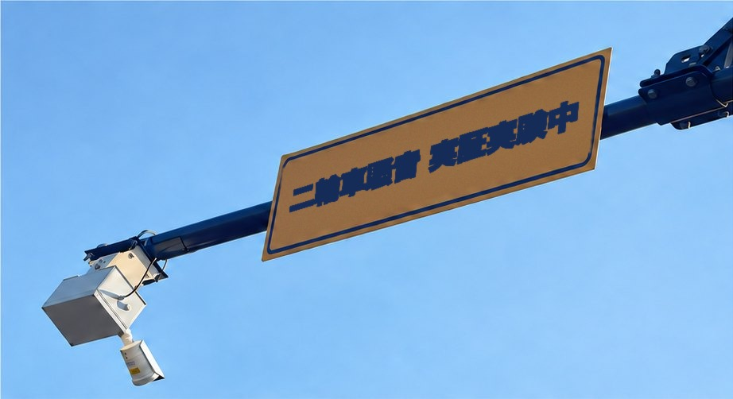

導入事例
実際の都市と発電所で
検証しました
自治体と公共機関の現場に直接設置し、運用して得られた結果を公開しています。数値ごとに、対象の範囲と期間を併記しています。
Case 01 · 自治体
始興市ペゴッ地区 二輪車騒音の実証
二輪車の騒音苦情が繰り返されていた始興市ペゴッ地区のヘソンシムニ路に装置を設置しました。騒音が発生した原因と時間帯を記録し、取り締まりは行わず、観測と案内だけで運用しました。
| 場所 | 大韓民国 京畿道 始興市 ペゴッ地区 ヘソンシムニ路 |
|---|---|
| 規模 | 4か所、装置4台 |
| 設置施設 | 車両検知システムの支柱 |
| 承認期間 | 2025.12.01〜2026.02.27（最初の承認） |

約60%
設置地域の騒音苦情の減少
2025年の設置時点から2026年6月まで。設置地域に限った数値
95%+
音の分類精度
目標達成の報告。2025年 最終報告書の基準
約88%
風・雨の条件での性能
気象条件ごとの運用を確認した結果
5.5m
基準距離への換算
基準距離に合わせて騒音レベルを補正するための値
※ 苦情の減少は設置地域に限った数値です。2026年9月に始興市が口頭で確認した基準によるものです。観測と案内が住民の行動変化にどこまで寄与したかは、別途分析しています。

Case 02 · 公共機関
泰安火力発電所
泰安火力発電所
音響連動の安全管理
発電所の現場で、目に見えない危険を音で捉え、CCTVと管制を連動させる技術を開発して納品しました。PoC（概念実証）では、既存のCCTV管制に音の情報を加えた場合の効果を確認しました。
30%↓監視死角の減少PoC（概念実証）での結果
25%↑イベント検知・検出率の向上PoC（概念実証）での結果
このPoCの結果をもとに、設備の異常を精密に確認するリアルタイムの超音波映像化システムも併せて開発しました。
| 納品先 | 韓国電力公社 |
|---|---|
| 内容 | PoC、技術開発の納品 |
導入機関
一緒に取り組んでいる機関
| 区分 | 機関名 | 取り組み |
|---|---|---|
| 公共機関 | 韓国電力公社 | 泰安火力発電所のPoC、技術開発の納品 |
| 自治体 | 始興市 | 二輪車騒音の実証、購入契約 |
| 自治体 | 春川市 | 購入契約 |
| 自治体 | 麟蹄郡 | 購入契約 |
| 協会 | 汎省庁統合ヘルスケア協会 | 研究開発の業務協約 |
| 企業 | JHCケミカル | 工程サービスの納入 |